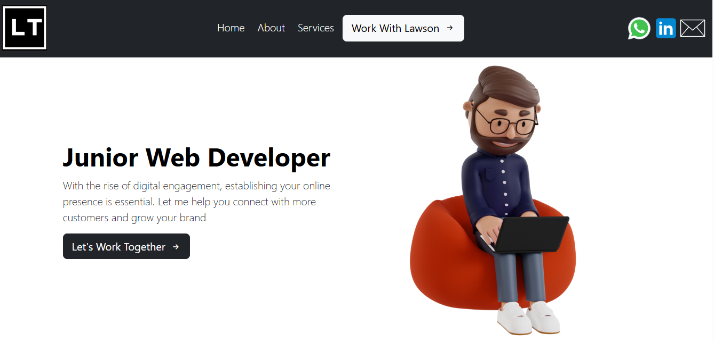

About Lawson Mutsa
An aspiring Software Developer who is currently pursuing his first certificate in Web and Computer Programming. Lawson resides in Zimbabwe and is 24 years old. He currently holds a Bachelor's Degree in Information Systems which he attained at Midlands State University in Zimbabwe. Lawson is now pursuing a Bachelor's in Software Development from BYU Idaho as he realized that his career lies in Software Development. Lawson is also single and does not have any kids.
My Portfolio Website
I created a website before I started Software Development at BYU Idaho. The website was developed using HTML, CSS, and Bootstrap for the frontend. On the backend, I used Spaceship as my web hosting platform and for domain registration. The link to the website is embedded in the image. Click the image to go to the website
